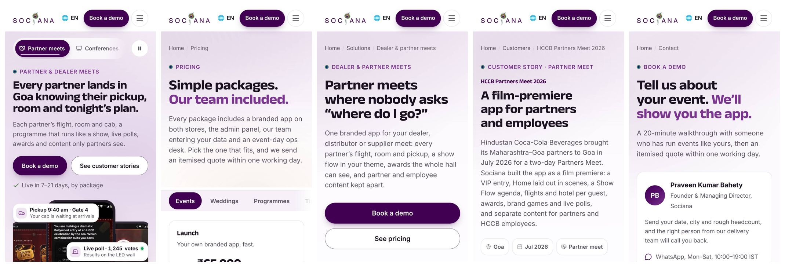
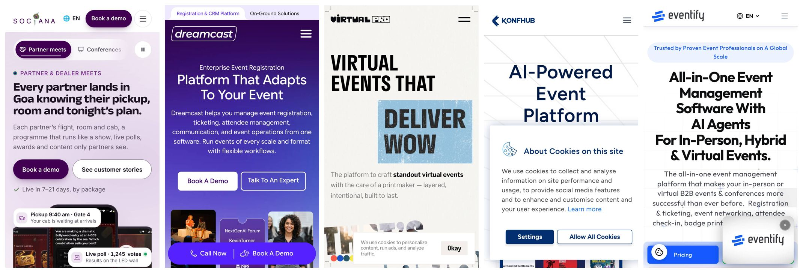
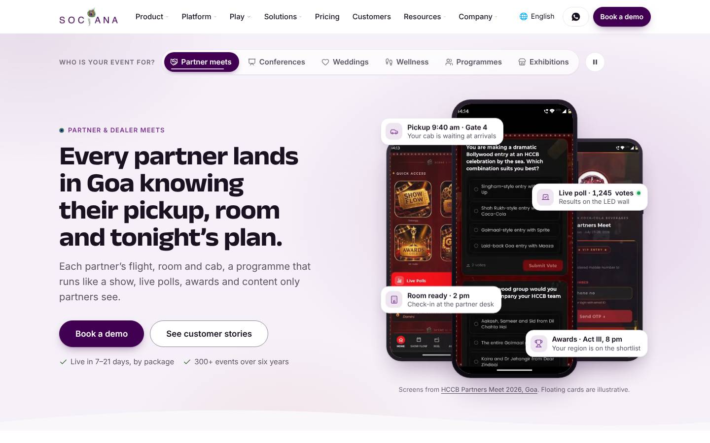

Six measured tests of sociana.in, with a recommendation for every finding, a design and structure audit, AEO and GEO plans, results from ChatGPT and Claude, a review of the features already on the site, and wording changes for the existing design. Findings and recommendations only: nothing on the site was changed.
| # | Section | What it covers |
|---|---|---|
| 1 | Conclusion and scorecard | The answer in one page, and every measured result with its status |
| 2 | Action plan | Five workstreams in order of dependency |
| 3 | Audit findings | Six tests: site crawl, mobile speed, technical signals, AI answers, Google rankings, competitors |
| 4 | AEO plan | Being the direct answer in Google and voice search |
| 5 | GEO plan | Being named by ChatGPT, Claude, Gemini and Copilot |
| 6 | Features buyers expect now | What the site already has, and how to make each feature work harder |
| 7 | Design and structure audit | How the site is built and how it feels on a phone, with 14 recommended changes |
| 8 | Look and feel | Keeping the existing design: wording changes, references, and what is needed to start |
| 9 | Solutions in full | Every finding with its recommendation and its check |
| 10 | Search phrases | What buyers search beyond the 12 test questions |
| 11 | Method and limits | How each test was run, and what was not tested |
sociana.in passes almost every on-site test we ran, and beats five competitors on speed. But it does not appear in Google's top 10 for any of the 55 searches we ran, and neither ChatGPT nor Claude knows Sociana from its own knowledge. The priority is no longer the website. It is everything outside it: links, listings, reviews and mentions, and using the words buyers type.
| Area | Measured result | Benchmark | Status |
|---|---|---|---|
| Pages working | 844 of 844 load | All pages | Pass |
| Structured data | 844 of 844 pages | Every page | Pass |
| Titles and descriptions | 0 duplicates; 1 title over 60 characters; 0 descriptions over 160 | Unique, within length | Pass |
| Content depth | Median 736 words of main content; 29 pages under 300 | Competitor homepages: 588 to 1,872 words | Pass |
| Mobile speed | Main content in 1.5 to 2.0 s; scores 94 to 100 | Under 2.5 s (Google) | Pass |
| Share image, redirects, error page | Unique 1200 × 630 image per page; www and http redirect; error page returns 404 with noindex | All correct | Pass |
| AI crawler access and llms.txt | 6 of 6 AI crawlers succeed; llms.txt and full text of 844 pages | All allowed | Pass |
| Answer-ready content (AEO) | FAQ markup on 684 pages; question headings on 609 | FAQs on pages meant to rank | Pass |
| Buyers' words on the site | "event management software", "event registration software" and "event ticketing platform": 0 uses each | The phrases Google suggests | Fail |
| Reviews and ratings | 0 of 844 pages carry review or rating markup | 3 of 5 competitors do | Fail |
| Comparison pages | 161 of 162 comparison, alternatives and best-of pages set to noindex | Indexed | Fail |
| Authority | Domain Rating 0 | Ranking sites: 24 to 91 | Fail |
| Google top 10 | 0 of 55 searches | Top 10 for core searches | Fail |
| AI answers, own knowledge (GEO) | ChatGPT 0 of 36; Claude 0 of 12 | Any mention | Fail |
| ChatGPT answers, with web search | Named in 13 of 48, for 5 of 12 questions | Named for every service | Partial |
| Entity records | No Wikidata or Wikipedia record; 5 profiles declared | Records on the sites AI reads | Fail |
| Internal linking | Every page within 3 clicks; 77 pages have one or no link from another page's content | Every page linked in context | Partial |
| Mobile first screen | Headline and "Book a demo" visible on 9 of 9 pages | Both visible | Pass |
| Accessibility | 0 failures on 8 of 9 pages; 3 contrast failures on the ticketing page | 0 failures | Near |
In order of dependency: each one makes the next more effective. These are recommendations; none has been carried out.
Correct the 161 hidden comparison, alternatives and best-of pages and open them to Google in stages, fix alt text on the demos page, the three contrast failures and the one long title. Result: every page built to win a search can appear in one.
Keep the existing pages and design. Add the searched category phrases to titles, first paragraphs and FAQs: event management software, event management app, white label event app, event registration software, event ticketing platform. Result: each core search has a Sociana page that says the phrase and answers it.
Earn links and mentions: review-site listings, app-store listings, client and partner sites, industry bodies, press, and the "best event app" lists that rank. Create the entity records. Result: Domain Rating rises from 0, and AI assistants begin to name Sociana.
The 14 structure and wording changes in section 7, and the feature recommendations in section 6: link industries, games and guides to pricing and case studies, show customer quotes as marked-up reviews, and bring the calculators and demos forward. Result: more visitors reach proof and pricing in one step.
Rerun the AI and Google tests in this report every month, add Gemini, Copilot and Search Console data, and report the trend. Result: proof of progress, and early warning when something slips.
| Page type | Pages | Median words | FAQ markup | Question headings | Tables |
|---|---|---|---|---|---|
| Glossary | 152 | 506 | 140 | 152 | 0 |
| Games and ideas (Play) | 132 | 2,050 | 101 | 34 | 43 |
| Guides | 104 | 1,447 | 103 | 104 | 99 |
| Help centre | 64 | 348 | 1 | 64 | 0 |
| Templates | 54 | 677 | 53 | 54 | 31 |
| Features | 51 | 389 | 50 | 6 | 0 |
| Platform | 36 | 737 | 35 | 0 | 0 |
| Industries | 26 | 592 | 25 | 25 | 0 |
| Occasions (event types) | 24 | 960 | 23 | 24 | 3 |
| Case studies | 18 | 1,448 | 0 | 18 | 0 |
| Pricing | 9 | 1,112 | 9 | 0 | 4 |
| Whole site | 844 | 736 | 684 | 609 | 259 |
All 844 pages return a working page, with no redirects, no duplicate titles or descriptions, one main heading each, a matching canonical address and structured data. 828 pages are in English and 16 are in seven other languages.
Small gaps: 23 of 4,606 images have no alt text, all on the demos page; 1 title is over 60 characters (the "event tech stack" blog post); 29 pages have under 300 words, mostly glossary terms, help articles and company pages; feature pages are the thinnest group that is meant to sell (median 389 words).
Recommendations: add alt text on the demos page; shorten the one title; deepen the feature pages with a worked example and a link to a case study each.
| Page | Speed /100 | SEO /100 | Main content shown | Weight |
|---|---|---|---|---|
| Homepage | 94 | 100 | 2.0 s | 0.30 MB |
| Pricing | 99 | 100 | 1.6 s | 0.16 MB |
| Occasion page (dealer and partner meets) | 98 | 100 | 1.8 s | 0.21 MB |
| Guide (wedding guest app) | 100 | 100 | 1.5 s | 0.15 MB |
| Case studies list | 100 | 100 | 1.5 s | 0.44 MB |
All five pages also score 100 for accessibility and best practices. The only figure over Google's guide is the homepage's blocking time: 240 ms against a 200 ms target.
Recommendation: no speed work is needed. Keep these scores as a rule for every new page, and trim the homepage script that causes the 240 ms.
| Check | Result | Recommendation |
|---|---|---|
| Share image | A different 1200 × 630 image on each of 844 pages; the homepage image loads | None |
| www and http addresses | Both redirect permanently to https://sociana.in | None |
| Error page | Returns 404 and is marked noindex | None |
| robots.txt | Valid; names AI search and AI training crawlers as allowed; lists the sitemap | None |
| llms.txt | Present, with key facts; a full-text file covers all 844 pages in four parts | Keep current as pages change |
| Security | HTTPS enforced; security contact file present | None |
| Comparison pages | 161 of 162 comparison, alternatives and best-of pages are noindex and absent from the sitemap. The compare sitemap holds one page | Correct them first (see the separate comparison pages review), then open in stages and add them to the sitemap |
| News feed | No RSS feed for the blog or guides (the usual addresses return 404) | Add a feed so new articles are picked up quickly |
Tested on ChatGPT and Claude. From their own knowledge, neither names Sociana (0 of 48 answers). With web search, ChatGPT names Sociana in 13 of 48 answers, for 5 of 12 questions. Full results and the plan are in section 5.
Each search was run for India in general and located in Mumbai, Delhi, Bengaluru and Kolkata. Sociana does not appear in the top 10 of any of the 55 results.
| Search | Sociana | Ranked #1 | Also in the top 10 (India) |
|---|---|---|---|
| event app india | Not in top 10 | Eventify | Capterra, Reddit, Eventee, Dreamcast, Showup |
| event management app india | Not in top 10 | Eventify | Zapier, Capterra, Nunify, Whova, Cvent |
| best event management software in india | Not in top 10 | IBTM World (article) | Whova, Capterra, Cvent, Swapcard |
| white label event app | Not in top 10 | Accelevents | Eventee, Eventtia, InEvent, Grip, Whova |
| branded event app | Not in top 10 | Socio (Webex Events) | Swapcard, Cvent, Guidebook, Dreamcast, Nunify |
| conference app india | Not in top 10 | Zinvos | nGauge, Whova, Wikipedia, Conference Prime, Dreamcast |
| event registration software india | Not in top 10 | Cvent (4 locations), Zoho (1) | RSVPify, Capterra, Zuddl, Dreamcast, Whova |
| best event ticketing platform in india | Not in top 10 | Dreamcast | Eventbrite, Zoho, Wowsly, MePass, Ticmint |
| event check in app | Not in top 10 | OneTap | RSVPify, Eventleaf, Cvent, Eventbrite |
| facial recognition event check in | Not in top 10 | InEvent | Dreamcast, Gevme, fielddrive, Cvent |
| dealer meet app | Not in top 10 | Google Play (an unrelated app) | App stores, YouTube, unrelated dealer apps |
| What the results show | Evidence |
|---|---|
| Location hardly matters | For 6 of 11 searches the same ten sites appeared in all five locations. Sociana is selling into a national result, not a city one |
| Review sites hold the top spots | Capterra India appears 15 times in the top 3 and 25 times in the top 10 across the 55 result lists |
| Global brands dominate Indian searches | Across the 55 top-10 lists, Cvent appears 25 times, Whova 24 and Dreamcast 21 |
| "Dealer meet app" is open ground | No event-app company ranks; the results are app-store listings and unrelated dealer tools. Sociana has a page built for it |
| Video ranks | YouTube appears 42 times across the 55 results. Sociana's homepage has no video |
Four more searches were planned and not run, because the search tool's daily allowance ran out: wedding guest management app, event gamification app, event app cost, exhibition lead capture app.
Recommendations: see sections 4, 5 and 9. In short: use the searched phrases on the pages that already exist, index the comparison pages, get listed on Capterra and similar sites, and earn links.
The five were chosen because they are the Indian or India-ranking event-app companies named most often in the Google results and AI answers above.
| Website | Domain Rating | SEO /100 | Speed /100 | Main content | Weight | Words | FAQs | Rating markup | Price shown |
|---|---|---|---|---|---|---|---|---|---|
| Sociana | 0 | 100 | 94 | 2.0 s | 0.3 MB | 1,845 | Yes | No | Yes |
| Dreamcast | 57 | 100 | 82 | 3.6 s | 1.0 MB | 1,148 | Yes | Yes | No |
| Hubilo | 73 | 100 | 48 | 5.9 s | 7.2 MB | 588 | No | No | No |
| Eventify | 69 | 85 | 52 | 3.8 s | 5.8 MB | 1,872 | Yes | Yes | No |
| KonfHub | 69 | 77 | 50 | 10.5 s | 20.6 MB | 1,124 | Yes | No | Yes |
| Samaaro | 39 | 92 | 24 | 30.1 s | 8.1 MB | 935 | No | Yes | No |
For reference, Cvent's Domain Rating is 91, Whova's 84, Nunify's 58 and Zinvos's 24. Zinvos ranks first for "conference app india" with a rating of 24, which shows that a focused page on a modest site can win a specific search.
AEO means being the direct answer: in Google's answer boxes, "People also ask", AI Overviews and voice search. Answer engines lift short, direct answers, lists, tables and FAQs. Sociana's pages already have these. What they lack is the buyer's own wording.
| AEO signal | Occasion pages (24) | Platform pages (36) | Feature pages (51) | Guides (104) | Case studies (18) |
|---|---|---|---|---|---|
| Question-style headings | 24 | 0 | 6 | 104 | 18 |
| FAQ markup | 23 | 35 | 50 | 103 | 0 |
| Tables | 3 | 0 | 0 | 99 | 0 |
| Named author | 0 | 1 | 0 | 103 | 17 |
| Date shown in markup | 0 | 0 | 0 | 103 | 17 |
| Buyers type | Google suggests |
|---|---|
| event app india… | event booking app india · event management app india · event planning app india |
| event management software india… | event planning software india · best event management software in india · what is event management software |
| white label event app… | white label conference app · white label event management app · white label app cost |
| event app cost… | conference app cost · event app development cost · event app pricing · whova event app pricing |
| event check in app… | event check in app free · best event check in apps · simple event check in app |
| event gamification… | event gamification ideas · examples · app · platform · software |
| dealer meet… | invitation card · gift ideas · speech in Hindi · banner design (no app suggestions) |
| cvent alternative… / whova alternative… | cvent alternatives · best cvent alternatives · whova alternatives · how much does whova cost |
| # | Recommendation | What it looks like | How we measure it |
|---|---|---|---|
| 1 | Add the category phrase to each core page | Keep each page and its headline. Add the searched phrase to the title, the first paragraph and one FAQ. Examples: platform page, "event management software"; ticketing page, "event ticketing platform in India"; registration page, "event registration software"; check-in page, "event check-in app" | Each of the 11 tested searches has a Sociana page using the phrase in its title |
| 2 | A direct-answer line under each headline | The headlines are stories ("Every partner lands in Goa knowing their pickup, room and tonight's plan"). Add one plain sentence beneath: "Sociana is a branded event app for dealer meets, conferences and weddings in India, with an admin panel and an event-day team." | All occasion, platform and feature pages open with a definition |
| 3 | Question headings on platform and feature pages | 0 of 36 platform pages and 6 of 51 feature pages use a question as a heading. Add two or three per page: "What is a white label event app?", "How does face check-in work at an event?" | Question headings on all 87 pages |
| 4 | Open the comparison and "best of" pages to Google | "Alternatives" and "vs" searches are where buyers decide. 161 pages already exist and are hidden. They need correcting before they open | Corrected pages indexed, in stages |
| 5 | Answer the cost question by name | The cost estimator and the Launch price exist. Title a page for "event app cost in India" and "conference app cost", with the ₹65,000 starting price in the first line and a table by package. ChatGPT already quoted this price in two of four cities | Sociana cited for the cost question in every city |
| 6 | FAQs and authors on case studies | 0 of 18 case studies carry FAQ markup. Add three buyer questions per case study ("Which app did HCCB use for its partner meet?") | FAQ markup on 18 of 18 |
| 7 | Short videos for the searches where YouTube ranks | YouTube appears 42 times in 55 results. A two-minute walkthrough per core search, with the same title as the page | A Sociana video in the results for at least 3 tested searches |
GEO means being named and cited by AI assistants such as ChatGPT, Claude, Gemini and Copilot. They draw on two things: what they learned in training, and what they find when they search the web. Sociana is absent from the first and present in the second for some questions.
ChatGPT (gpt-4.1) through the OpenAI API, 21 November 2026. With web search, each question was asked once in each of four cities, so "4 of 4" means all four cities. Answers vary between runs and days.
One question for each thing Sociana sells on its main menu (conference apps, white-label apps, dealer meets, hospitality, weddings, ticketing, check-in, engagement, agencies, WhatsApp), plus cost and one full-sentence buyer brief. They were not chosen by search volume; section 10 shows what they miss.
| Source | Test | Result |
|---|---|---|
| ChatGPT, own knowledge | 12 questions × 3 runs | Sociana named in 0 of 36. Named most: Hubilo (24 answers), Townscript (18), Cvent (17), 10times (17), Eventify (11), Whova (8), Dreamcast (6) |
| ChatGPT, with web search | 12 questions × 4 cities | Sociana named in 13 of 48, more than any other single company. The rest of each answer is mostly small Indian firms that differ by question: SignupDesk, Tixibo, Aurentex, EventOrg, EventHex |
| Claude, own knowledge | 12 questions × 1 run | Sociana named in 0 of 12, and Claude said it has no reliable knowledge of Sociana. Named most: Dreamcast (9 questions), Samaaro (7), Cvent (6), Hubilo (5), KonfHub (4) |
| Gemini and Microsoft Copilot | Not tested | These cannot be run from our test setup. The question list and capture format are below |
| GEO signal | Result |
|---|---|
| AI crawlers reaching the site | 6 of 6 succeed on three pages, three tries each: GPTBot, OAI-SearchBot, ChatGPT-User, ClaudeBot, PerplexityBot, Google-Extended |
| Content readable without JavaScript | Yes: page text is in the page source |
| Sources ChatGPT cites | 369 links across 48 answers, from 133 different sites. Google Maps 52 (14%); sociana.in 8 (2%); the rest spread thinly across company sites |
| Sociana pages cited | Ticketing page (4 times), homepage (2), Launch pricing page (2). No occasion page, case study or guide was cited |
| Wikidata entry | None found for Sociana or Alien Brains |
| Wikipedia mentions | None found |
| Profiles declared in structured data | 5: LinkedIn, App Store, Instagram, Facebook, Tracxn. Not declared: Google Play, YouTube, any review site |
| Review sites in Google's results | Capterra India appears 25 times across the 55 top-10 lists. We did not check whether Sociana is listed there |
| # | Recommendation | What it looks like | How we measure it |
|---|---|---|---|
| 1 | Get listed where AI and Google look | Complete, identical listings on Capterra, G2, Software Suggest, TechJockey and Technology Counter (three of these appeared in our Google results), plus Google Play and the App Store with the same description | Listings live; each declared in structured data |
| 2 | Collect reviews on those listings | Ask recent clients for a short review on one listing each. Show the same quotes on the site with review markup | Review count per listing; rating markup valid on the site |
| 3 | Create the entity records | A Wikidata entry for Sociana and for Alien Brains Private Limited, a Crunchbase profile, a Google Business Profile for the Kolkata office, and one consistent company description everywhere | Records live and consistent |
| 4 | Earn mentions and links | Case studies co-published or linked by clients and agencies; listings with industry bodies; inclusion in "best event app in India" articles (the IBTM World, Zapier and Capterra pages that rank); founder articles in trade press | Domain Rating above 0 and rising; number of sites linking |
| 5 | Match the question wording on the pages AI should cite | "Dealer meet app", "wedding guest app with room allocation", "event app with WhatsApp tickets", "QR and face recognition check-in in India", "white label event app for agencies" as plain phrases in the title and first line of the matching page | Named for all 12 questions with web search |
| 6 | Make case studies citable | No case study was cited. Give each a facts line at the top (client, city, month, headcount, modules used) and three FAQs | A Sociana case study cited in the monthly test |
| 7 | Track monthly, on more engines | The same 12 questions on ChatGPT, Claude, Gemini, Copilot, Perplexity and Google AI Mode | Share of answers naming Sociana, month on month |
Open gemini.google.com and copilot.microsoft.com in a signed-in browser. Start one new chat per question, paste the question exactly, and record: (1) the companies named, in order; (2) every link shown as a source; (3) the date and your city. Save each assistant's twelve answers as one PDF. We will add the results to this report.
| # | Question |
|---|---|
| 1 | Which is the best event app for a corporate conference in India? |
| 2 | Which companies build branded, white-label event apps for iOS and Android in India? |
| 3 | What is the best app for running a dealer meet or channel partner meet in India? |
| 4 | Which event app manages each guest's flights, hotel room and airport pickup for a corporate offsite or incentive trip in India? |
| 5 | What is the best wedding guest app in India for RSVPs, room allocation and itineraries? |
| 6 | Which event registration and ticketing platform in India supports UPI payments and GST invoices? |
| 7 | Which event platforms in India offer QR code and face recognition check-in? |
| 8 | Which event app has live polls, leaderboards and games for employee engagement events in India? |
| 9 | Which white-label event app suits an event management agency in India running events for many clients? |
| 10 | How much does a custom event app cost in India? |
| 11 | Which event platform in India sends tickets, passes and reminders on WhatsApp? |
| 12 | I am planning a 500-person annual sales conference in India and want a branded event app that the vendor's team sets up and supports on the event day. Who should I shortlist? |
Buyers now arrive from AI assistants and expect a website to answer them just as directly. Sociana's site already has most of what we would normally recommend adding. So this section proposes no new features. It lists what exists and recommends how to make each one easier to find. These are recommendations, not measurements.
| Feature buyers expect | On sociana.in today | Recommendation |
|---|---|---|
| AI search of the site's own content | Present: "Ask anything about running your event" on the homepage | Offer the same box on pricing, occasion and help pages. We found a search or ask box on 1 of 844 pages. We did not test the answers it gives |
| Instant cost estimate | Present: 18 calculators, including an event app cost estimator, plus a starting price of ₹65,000 on the pricing page | Link the cost estimator from the pricing page's first screen and from every occasion page. Name it for the search "event app cost" |
| Try before you talk | Present: 24 interactive demos and a free game trial at play.sociana.in | Add "Try a sample" beside "Book a demo" on the first screen. Fix the 23 images without alt text on the demos page |
| Proof by occasion | Present: 18 case studies with real app screens; 12 client logos on the homepage | Link a case study from each feature page (3 of 51 do today). Add client quotes as marked-up reviews |
| Entry by buyer type | Present: occasion tabs on the homepage, six role pages, an "I'm reading as" switch | Keep. Give the rotating homepage one fixed line that states what Sociana is |
| WhatsApp-first contact | Present: a WhatsApp link on all 844 pages | Keep. Consider a click-to-call link too; no page has one |
| Local languages | Present: 16 pages across seven languages | Extend only where enquiries come from; start with pricing and the top occasion page in Hindi |
| Comparison with alternatives | Built but hidden: 161 comparison, alternatives and best-of pages, all noindex | Correct them, then open in stages. This is the largest ready-made gain on the site |
| Templates and checklists | Present: 54 templates | Link templates to the feature that does the job (15 of 54 do today) |
| Trust and procurement pack | Present: a trust centre with 10 pages | Keep. Link it from the pricing page for enterprise buyers |
| Short product films | Missing: no video on the homepage, and no video markup on any page | The one gap. Start with two-minute walkthroughs of the dealer meet and conference apps, using the existing app screens |
| Reviews and ratings | Missing from structured data on all 844 pages | See GEO plan, items 1 and 2 |
We measured the live site's structure and design the same way as its search performance: every link on all 844 pages, and nine key pages loaded on a phone and a desktop. The findings below are measurements; the recommendations follow from them.
| What we checked | Result | Why it matters |
|---|---|---|
| Click depth | 88 pages one click from home, 712 two clicks, 43 three clicks. None unreachable | Good: nothing is buried |
| Main menu | 72 links in eight groups: Product, Platform, Play, Solutions, Pricing, Customers, Resources, Company. The footer has 47 | Thorough, but long. "Product" and "Platform" overlap for a first-time visitor |
| Industry pages | 25 of 26 are three clicks from home, and the typical one has 1 link from another page's content | These are the weakest-linked pages that are meant to sell |
| Feature pages linking to a case study | 3 of 51 | A buyer reading about a feature is rarely shown it in use |
| Occasion pages linking to a case study | 23 of 24 | Good |
| Case studies linking to features and occasions | 17 of 18, and all 18 link to other case studies | Good |
| Guides linking to features and occasions | 103 and 102 of 104 | Good |
| Game and idea pages linking to pricing | 0 of 132 | The largest content group with the most words passes no visitor to pricing |
| Guides linking to pricing | 6 of 104 | Readers ready to buy have no direct route to a price |
| Templates linking to a feature | 15 of 54 | A template is the natural lead-in to the feature that replaces it |
| Pages linked on the site but not in the sitemap | 161 comparison, alternatives and best-of pages are built but set to noindex; 25 of them are linked from other pages | Built pages that cannot appear in search |
| Breadcrumbs | 843 of 844 pages | Good |
| Homepage links in its content | 11 occasions, 10 case studies, 4 features, pricing, customers, guides, Play | Good: proof is one click away |
| Web addresses | Typical length 49 characters; longest 81 | Good |
| Enquiry routes | "Book a demo" in the content of 636 pages; WhatsApp on all 844; no phone link on any page | Good coverage; one channel missing |

First screen on an iPhone 13, 21 November 2026: homepage, pricing, dealer and partner meets, HCCB case study, contact.
| What we checked | Result | Why it matters |
|---|---|---|
| First screen | All 9 pages show the main headline and a "Book a demo" button without scrolling | Good: the visitor knows what the page is and what to do |
| Homepage headline | "Every partner lands in Goa knowing their pickup, room and tonight's plan." It changes with the occasion tab | Vivid, but it does not say what Sociana is. The words "event app" appear in the smaller text, not the headline |
| Length of pages on a phone | 9.3 screens (contact) to 23.5 (case study); average 18.1; homepage 15 | Long. Competitor homepages run 7 to 31 screens |
| Tap targets | 8 of 105 links and buttons on the homepage are under 44 pixels (8%); 16 of 97 on the dealer meets page | Good; a few small links remain |
| Small text | 0 to 2% of text under 14 pixels on eight pages; 15% on the ticketing page | One page to fix |
| Capital letters | 1 to 7% of text on eight pages; 14% on the case studies list | Good |
| Colour contrast and accessibility | 0 failures on eight pages; 3 contrast failures on the ticketing page | One page to fix |
| Fonts and sizes | Two typefaces (Inter about 90%, Anek Latin about 10%); 8 to 13 text sizes per page, 18 on the ticketing page | Consistent, except the ticketing page |
| Sideways scrolling | None on any page | Good |
| Homepage media | 51 images, no video; 0.3 MB in total | Light and fast; no moving proof of the product |
| Enquiry form | 7 visible fields; only name and consent are required | Good: low effort to send |

First screen on an iPhone 13: Sociana, Dreamcast, Hubilo, KonfHub, Eventify.
| Homepage | Headline on first screen | Says what the product is | Buttons on first screen | Screens of scrolling | Tap targets under 44 px |
|---|---|---|---|---|---|
| Sociana | Yes | No: a guest story | Book a demo | 15 | 8 of 105 |
| Dreamcast | Yes | Yes: "Enterprise Event Registration Platform" | Book a demo, Talk to an expert, Call now | 16.3 | 60 of 120 |
| Hubilo | Yes | No: "Deliver WOW" | None | 7 | 10 of 10 |
| KonfHub | Yes | Yes: "AI-Powered Event Platform" | Book a demo | 24 | 82 of 89 |
| Eventify | Yes | Yes: "All-in-One Event Management Software" | Pricing, Request demo, Free trial | 31.2 | 105 of 124 |
Sociana's phone experience is the cleanest of the five. The one thing three competitors do that Sociana does not is name the product category in the headline. Samaaro's homepage could not be measured.
The current structure is sound. The diagram shows it with the recommended additions marked "add" or "open". Nothing is removed.
Every page stays within three clicks. "Compare" becomes a visible group once its pages are indexed.
| Page | Keep | Add |
|---|---|---|
| Homepage | Occasion tabs, app screens, ask box, client logos, packages, FAQs | One fixed line naming the product category · "Try a sample" beside "Book a demo" · a short film · client quotes with review markup |
| Occasion page | Story headline, definition, comparison table, case study, package, FAQs | The searched phrase in the title · links to two matching industry pages · the cost estimator |
| Platform and feature pages | Headline, screens, FAQs | Category phrase in title and first line · two question headings · one case study link |
| Case study | Brief, what was built, how it ran, modules | Facts line at the top · three FAQs · client quote with review markup |
| Guides, templates, game ideas | Content, tables, author | One link to pricing or the cost estimator · one link to the matching feature |
| Finding | Recommended change | How we'll know it worked |
|---|---|---|
| 161 comparison, alternatives and best-of pages are noindex | Correct them, then allow indexing in stages and add to the sitemap | Corrected pages appear in Google's index |
| Homepage headline does not name the product | Keep the story headline; add a fixed line beneath it with "branded event app" and "event management app" | The category phrase is on the first phone screen |
| "Event management software" and four more category phrases never appear | Add each to the title, first paragraph and one FAQ of its matching page | Each phrase appears on at least one page built for it |
| 3 of 51 feature pages link to a case study | Add "See it at a real event" with one case study to every feature page | 51 of 51 link to a case study |
| 25 of 26 industry pages are three clicks deep | Link industries from the matching occasion pages and from the Solutions menu | All industry pages within two clicks |
| 0 of 132 game and idea pages link to pricing | Add one line: "Run these at your event: see packages" | 132 of 132 link to pricing |
| 6 of 104 guides link to pricing | Add a pricing or cost-estimator link at the end of each guide | 104 of 104 |
| 15 of 54 templates link to a feature | Link each template to the feature that does the job | 54 of 54 |
| 77 pages with one or no link from page content | Add "related" links by topic on glossary, help and template pages | No page with fewer than 3 links from content |
| Menu has 72 links; Product and Platform overlap | Test a single "Product" group with the same pages; no pages removed | Menu under 50 links; no loss of clicks to key pages |
| Ticketing page: 3 contrast failures, 15% small text, 18 text sizes | Bring it in line with the other pages | 0 failures; under 2% small text |
| 23 images without alt text on the demos page | Add alt text | 0 images without alt text |
| Pages average 18 screens on a phone | Add a short "on this page" jump list on pages over 15 screens | Jump list on every long page |
| No phone link on any page | Add a click-to-call link beside WhatsApp on the contact page | Call link present |
Following Sociana's direction, we propose no new homepage designs. The existing design scored 100 for accessibility on all five pages tested, is the fastest of six homepages, and is the cleanest of five on a phone. The recommendations here are wording changes inside that design.

sociana.in homepage on a 1440-pixel desktop, 21 November 2026.
The current headline stays. The suggested line goes into the title or directly under the headline. Every phrase comes from our Google tests or Google's suggestions.
| Page | Headline today | Suggested added wording | Search it targets |
|---|---|---|---|
| Homepage | Every partner lands in Goa knowing their pickup, room and tonight's plan. | Branded event app and event management platform for India | branded event app · event app india · event management app india |
| Platform | Everything your event needs, in one app. | Event management software for conferences, meets and weddings | best event management software in india |
| Agencies | One white-label app. Every client's occasion inside it. | White label event app for agencies (also without the hyphen) | white label event app · white label event management app |
| Conferences | A conference app delegates open before the first session, not after it. | Conference app for India | conference app india · conference mobile app india |
| Dealer and partner meets | Partner meets where nobody asks "where do I go?" | Dealer meet app (title today: "Supplier, dealer & partner meets app") | dealer meet app |
| Registration | Registration that already knows the teams. | Event registration software for India | event registration software india |
| Ticketing | Ticketing that ends at the gate, not the payment page. | Event ticketing platform in India with UPI and GST invoices | best event ticketing platform in india |
| Check-in | Check-in by QR today. By face, only if guests choose. | Event check-in app with QR and facial recognition | event check in app · facial recognition event check in |
| Pricing | Simple packages. Our team included. | Event app cost and pricing in India | event app cost · event app pricing |
Each site was opened and checked on 21 November 2026. Borrow the pattern, not the look.
| Pattern | Reference | What to borrow | Where it goes on the existing site |
|---|---|---|---|
| Category named in the headline | Swapcard · Whova swapcard.com · whova.com | The page title and headline state the product category in the buyer's words | The fixed line under the homepage headline |
| Pricing answered in the first line | Stripe stripe.com/in/pricing | The price appears before any explanation | Pricing page and the "event app cost" page |
| Customer stories filtered by need | Slack slack.com customer stories | Stories grouped by industry and use, each with a named quote | Case studies list and the new reviews block |
| Short product loops beside the text | Linear linear.app | Small silent loops of the product in use, next to each claim | Homepage feature rows, using existing app screens |
| One event, one clear page | Luma lu.ma | A single, calm page per event with the key facts at the top | The facts line on each case study |
| Wedding guest tools explained simply | Joy withjoy.com | RSVP, rooms and schedule named as plain benefits | The weddings occasion page |
| Needed | Used for |
|---|---|
| Access to Google Search Console and Analytics | The searches that already bring visitors; whether pages are indexed; measuring results |
| A decision on the comparison pages | Correcting and opening the 161 hidden comparison pages |
| Ten client quotes with name, role and organisation, and permission to publish | Reviews on the site and on listing sites |
| Facts for each case study: city, month, headcount, modules | The facts line and FAQs |
| Logins or an owner for Capterra, G2, Google Play, App Store and Google Business Profile | Listings and entity records |
| Gemini and Copilot answers to the 12 questions | Completing section 5 |
| Approval of the added wording in the table above | Title and first-line changes |
| Screen recordings of two apps | The short product films |
The complete list behind the action plan. Each recommendation has a check that shows it worked. None has been carried out.
| Finding | Recommendation | How we'll know it worked |
|---|---|---|
| 23 images without alt text, all on the demos page | Add alt text to each | 0 images without alt text |
| 1 title over 60 characters | Shorten the "event tech stack" title | 0 titles over 60 characters |
| Feature pages have a median of 389 words | Add a worked example, a case study link and two question headings to each | Median over 600 words |
| 29 pages under 300 words | Leave help and glossary pages short; expand the five company pages (founder, team, facts, partners, careers) | Company pages over 300 words |
| 0 of 18 case studies have FAQ markup | Three buyer questions per case study | 18 of 18 |
| 0 of 844 pages have review or rating markup | Named client quotes with review markup on the homepage, customers page and case studies | Google's Rich Results Test shows reviews |
| Finding | Recommendation | How we'll know it worked |
|---|---|---|
| All five pages show main content in 1.5 to 2.0 s | No change. Hold every new page to the same standard | Scores stay at 90 or above |
| Homepage blocking time 240 ms | Delay the homepage's interactive scripts until after the page is shown | Blocking time under 200 ms |
| Finding | Recommendation | How we'll know it worked |
|---|---|---|
| 161 comparison, alternatives and best-of pages are noindex | Correct, then index in stages and add to the sitemap | Pages appear in Google |
| No RSS feed | Add a feed for guides and blog | Feed address returns the latest articles |
| Share images, redirects, robots.txt, error page, llms.txt all correct | No change | Checks keep passing |
| Finding | Recommendation | How we'll know it worked |
|---|---|---|
| 0 of 55 top-10 results | Wording changes (section 8), indexed comparison pages, listings and links (section 5) | Top 10 for at least 3 of the 11 searches |
| Category phrases never used on the site | Add each phrase to its matching page | Every tested search has a page using the phrase in its title |
| "Dealer meet app" has no real competitor | Retitle the dealer meets page to lead with "Dealer meet app" | Top 10 for "dealer meet app" |
| Capterra appears 25 times across the 55 top-10 lists | A complete Capterra listing with reviews | Sociana listed in the relevant Capterra categories |
| YouTube appears 42 times in 55 results | A short walkthrough video per core search | Sociana video ranking for 3 searches |
| Results are national, not local | Do not build city pages yet; put effort into the national phrases | None needed |
| Finding | Recommendation | How we'll know it worked |
|---|---|---|
| Domain Rating 0 against 39 to 73 | Earn links: client and agency sites, industry bodies, listings, press, guest articles | Domain Rating above 20 |
| 3 of 5 competitors show ratings in structured data | Review markup from real client quotes | Ratings eligible to show in results |
| Sociana is the fastest and one of two showing a price | Say so: add "see the price before you call" to the comparison pages | Claim present and accurate |
The AEO and GEO recommendations are in sections 4 and 5; structure and design changes are in section 7.
The 12 questions used in the AI tests are a sample, not the full picture. We chose one for each thing Sociana sells, plus cost and one buyer brief, so that every service was tested. They were not chosen by search volume.
To see what else buyers search, we collected Google's suggestions for 46 starting phrases, each extended with 20 letters (966 lookups, 21 November 2026). That returned 2,518 different phrases.
| Theme | Phrases found | Examples | Covered by our 12 questions? |
|---|---|---|---|
| Weddings: guest lists, RSVP, invitations, websites, sangeet games | 502 | how to do online rsvp for wedding · indian wedding website examples · sangeet games for audience | Partly: one question |
| General: event app, software, platform | 284 | event management apps in india · what is event management software · event app in india | Partly: one question |
| Games and team building | 236 | corporate event games ideas · fun games for corporate events · games for large groups | Partly: one question |
| Employee engagement and step challenges | 226 | employee engagement activities · step challenge app for work · how to set up a step challenge | Partly: one question |
| Registration and ticketing | 223 | what is event registration · event registration software free · best online ticketing system | Yes |
| Design, development, jobs and courses | 197 | event app development cost · event management app development company | No; mostly not buyers |
| Dealer, channel partner and corporate meets | 189 | company offsite ideas · channel partner meet in real estate · dealer meet invitation card | Yes: two questions |
| Conference and exhibition apps | 187 | conference mobile app india · conference app for associations · trade show lead capture app | Partly: exhibitions not tested |
| Cost, price, free | 102 | event management software free · wedding rsvp app free · event app pricing | Yes: one question |
| Named competitors and alternatives | 69 | cvent alternatives · whova alternatives · event management software like cvent | No |
| Check-in, QR and face recognition | 42 | qr code event check in app · simple event check in app · best event check in apps | Yes |
| Polls, gamification, networking | 39 | event gamification ideas · live polling results | Yes |
| WhatsApp and invitations | 28 | how to send event invite on whatsapp · whatsapp event invitation message | Yes |
| White-label, branded, custom app | 15 | white label event management app · branded event mobile app · custom event app | Yes: two questions |
| Other | 179 | apps for event planning · event management erp software | No |
The count is the number of different phrases Google suggested, which shows how many ways people search a theme. It is not search volume. A phrase is counted once, in the first theme it matches.
Two questions covered white-label and branded apps, where Google suggests only 15 phrases. Weddings, games and employee engagement produce 964 phrases between them and had one question each. Sociana has 132 game pages and a weddings page ready for this demand.
Named alternatives (69 phrases such as "cvent alternatives") and exhibitions. Sociana has pages for both, and the alternatives pages are the ones currently hidden from Google. "Free" is also a strong thread: buyers add it to registration, RSVP, check-in and step-challenge searches.
| Priority | Phrase group | Existing page to strengthen |
|---|---|---|
| 1 | event app, event management app, event management software, with "India" and "best" | Homepage and platform page; "best event apps in India" page once indexed |
| 2 | cvent, whova and other alternatives | The comparison and alternatives pages |
| 3 | event app cost and pricing; "free" | Pricing, the cost estimator and the free game trial |
| 4 | corporate event games, team building games, sangeet and wedding games | The 132 game and idea pages, each linked to pricing |
| 5 | wedding RSVP, guest list and wedding website | Weddings occasion page and the wedding guest app guide |
| 6 | employee engagement activities; step challenge app for work | Employee programmes and wellness pages |
| 7 | registration, ticketing, check-in | The three platform pages, with the category phrase added |
| Test | Tool and setup | Scope |
|---|---|---|
| Site crawl and AEO signals | Automated crawl of every page in the 17 sitemaps, 21 Nov 2026 | 844 pages |
| Buyer phrases in page text | Phrase counts in the site's own full-text file of all pages | 844 pages, 15 phrases |
| Speed | Google Lighthouse 12.2, mobile setting, 21 Nov 2026 | 5 Sociana pages, 5 competitor homepages |
| Technical signals | Direct requests for redirects, error page, robots.txt, share image, llms.txt | 13 checks |
| AI visibility, ChatGPT | ChatGPT (gpt-4.1) through the OpenAI API: web search located in Mumbai, Delhi, Bengaluru and Kolkata (1 run each), and 3 runs with no web search | 12 questions, 84 answers |
| AI visibility, Claude | The same 12 questions answered by Claude from its own knowledge, no web search | 12 answers, 1 run |
| AI crawler access | Page requests identifying as each crawler, 3 pages × 3 tries | 6 AI crawlers, plus Google and Bing |
| Entity records | Searches of Wikidata and Wikipedia; profiles read from the site's structured data | 2 names |
| Google rankings | Top 10 web results for India and located in Mumbai, Delhi, Bengaluru and Kolkata | 11 searches × 5 locations = 55 |
| Authority | Ahrefs Domain Rating (free lookup) | 10 sites |
| Site structure | Every link on all 844 sitemap pages | 844 pages |
| Design and usability | Pages loaded in a browser as an iPhone 13 and a 1440-pixel desktop; accessibility checked with axe-core (WCAG 2 A and AA) | 9 Sociana pages, 4 competitor homepages |
| Wider search phrases | Google autocomplete for India, 46 starting phrases × 21 variations | 966 lookups, 2,518 phrases |
| Competitors | Homepage content and Lighthouse | 6 homepages |